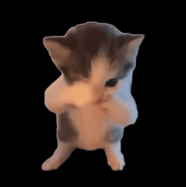

Kicau Mania terdeteksi! 🐦🕺
Tutup mulut dengan tangan kiri, lalu lambaikan tangan kanan ke kiri-kanan dengan cepat — begitu gerakan "kicau mania" terdeteksi, kucing joget dan musik langsung menyala. Semua diproses langsung di browser lewat webcam-mu; tidak ada video yang dikirim ke server manapun.
